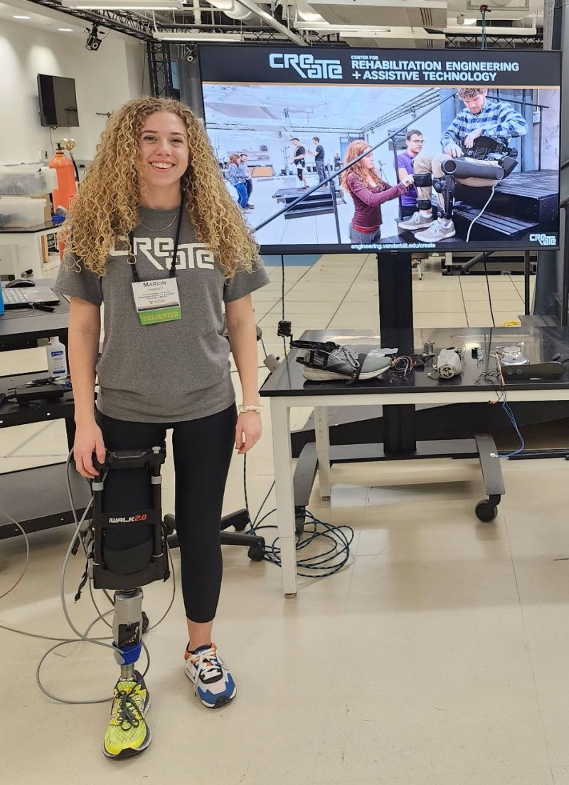
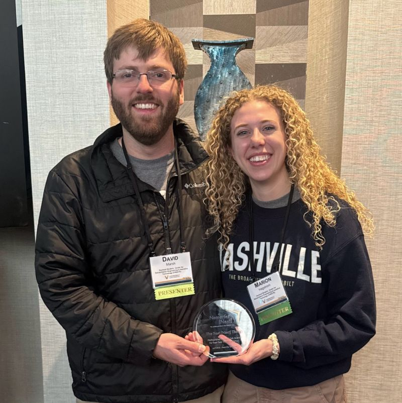

2026IROSPoster
Backward-Walking Controller for a Swing-Assist Knee Prosthesis
Marion Hagstrom, David Marsh, Michael Goldfarb
IEEE/RSJ International Conference on Intelligent Robots and Systems
2026AAOPOral presentation
Development of a Backward Walking Controller for a Semi-Powered Microprocessor Knee
Marion Hagstrom, Michael Goldfarb
American Academy of Orthotists and Prosthetists Annual Meeting · February 18–21, 2026 · Nashville, TN
2026VanderbiltPitch
Affordable Microprocessor Knee
Firestarter Pitch Competition · October 6, 2026
2025Nemertes [Next]Research lab presentationAward
CREATE Lab research presentation
Marion Hagstrom, David Marsh, Katherine Rodzak
Best [Next] Thing Award – Distinguished Research Lab Presentation, voted by conference attendees.


2023Bioengineering for Global HealthPoster
Open Source Enabling Self-Provision of 3D Printed Assistive Devices
Marion Hagstrom
2022NeurosciencePoster
Differences in the Anatomical Distributions of Low Versus High Strength Nodes in Normal Aging Versus Young Individuals
M. Hagstrom, P. Kotlarz, Y. Cruz-Almeida, M. Febo, J. C. Nino
Society for Neuroscience, Neuroscience 2022 · San Diego
2022UF Research SymposiumPoster
Translating Biomarker Identification in Alzheimer’s Disease: Mouse Model to Human Model
M. Hagstrom, P. Kotlarz, J. C. Nino